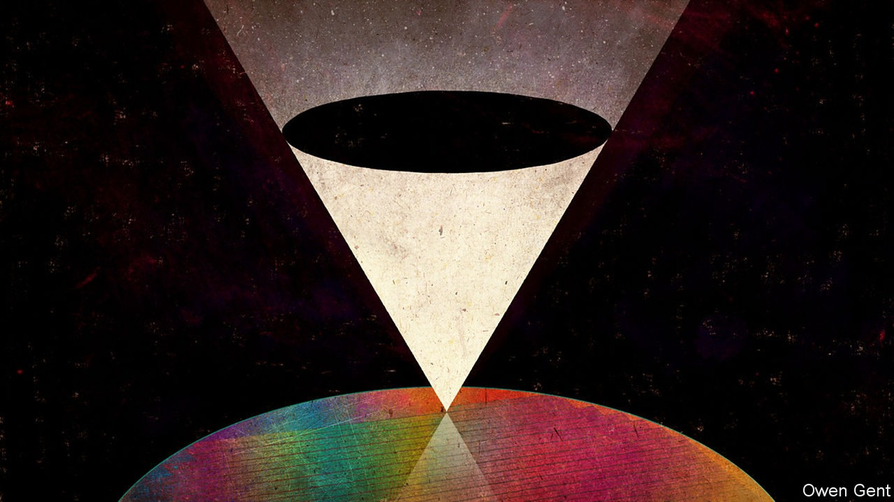
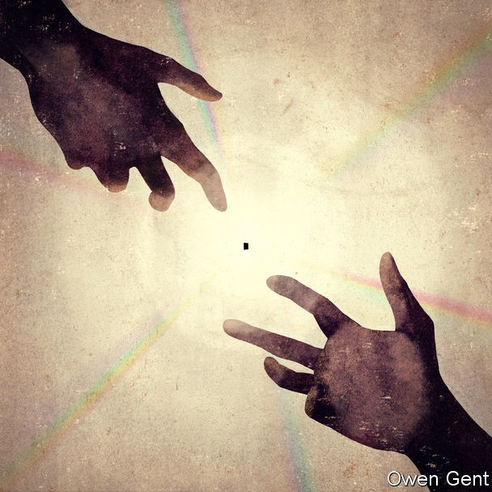

A look inside the factory around which the modern world turns
How one Taiwanese firm uses unrivalled technology to dominate the world’s chip-making industry

ACCOMPANIED ONLY by the night-time striddling of cicadas and the squeaky pedal on your borrowed bicycle, you head west through cabbage and sugarcane towards red neon signage on the horizon. By the time you reach the fields’ end, the hum of air-filtration systems drowns out the insects. Five factory buildings loom in the darkness behind steel fences. Stray dogs roam between parked cars; sprinklers water the sumac trees planted at the edge of the facility. High-tension wires dive down into a substation from steel pylons, bringing with them enough megawatts to power a small city.
Listen to this story.Enjoy more audio and podcasts on iOS or Android.
Listen to this story
Save time by listening to our audio articles as you multitask
Some of the water evaporates from warm concrete walkways, wafting an artificial petrichor scent over entrance D2, the gate in the north-west corner of the compound which leads to a sixth factory as yet only half built. Construction workers are trailing out of it, mounting scooters and heading away into the night. But even now, an hour before midnight, the work has not ended; heavy construction clangs out over the car park. The building is vast; cycling around it would take ten minutes or so, on foot it might take an hour. Not that this is a possibility. Security guards emerge from their huts as you approach, some rushing and shooing, others merely placing themselves pointedly in your line of sight.
Unless you are in the semiconductor business, or some allied trade, the letters on the neon signs on the factory roofs—TSMC—probably mean a lot less to you than the names of most of the other 29 of the world’s 30 most valuable public companies. But Apple (the second most valuable on average over the past six months, at $1trn), Alibaba (seventh, $458bn), Visa (9th, $380bn), Disney (21st, $249bn) and many of the others would be nowhere without the Taiwan Semiconductor Manufacturing Company (26th, $228bn).
Unlike most of those other megacorps, TSMC does not sell products or services to the public, but its fabrication plants—or “fabs”—provide many of the high-performance chips which make those products and services possible. Phones, online marketplaces, smart cards, streaming video and much more all depend on them. With up to 90% of the market for the third-party manufacture of advanced chips, TSMC dominates the production of the infrastructure on which the modern world relies by manipulating matter with a precision no other company can match.
That unique capability makes TSMC important in a way that goes far beyond the commercial. Vital to the advanced industries of both the United States and China, its unmatched capabilities in the realm of the nanoscule have implications at the highest levels of geopolitics.
Semiconductors are mazes of circuitry consisting of components such as transistors carved into silicon. The exponential increase in computer capabilities known as Moore’s law (named after Gordon Moore, one of the founders of Intel, a chipmaker) is possible because making a chip better and cheaper requires little more than making those components smaller. But creating extraordinary shrinking circuits requires an extraordinarily increasing physical infrastructure.
Not just fab: the fabbest
Next year TSMC’s Fab 18, that half-finished sixth building currently being worked on at all hours in the corner of the campus outside Tainan, will start making chips for Apple’s new iPhone. These chips will cram more than 170m transistors onto each square millimetre of silicon, creating structures with features as small as five-billionths of a metre, or five nanometres (5nm). That is 1,000 times smaller than a red blood cell, 100 times shorter than the wavelength of visible light, well under a tenth the size of a virus like HIV.
More or less the only things of consequence smaller than 5nm are individual molecules—and some of them are not all that much smaller. Biotechnology companies make such molecules all the time, to be sure, but they start from the bottom up, borrowing nature’s machinery to build their wares atom by atom. Semiconductor manufacture works from the top down, cutting things away. Needing to do so at a just-more-than-molecular level of detail is what makes Fab 18 the most expensive factory ever built, with a capital outlay of some $17bn. The state of the art Tesla factory in Shanghai cost just a fifth of that amount.
The fab’s raw material is the most common element in the Earth’s crust: silicon. Quartz sand is refined into molten silicon with a purity of 99.999999999%. Then it is drawn into cylinders about two metres long and 30cm across before being sliced into circular wafers. Perhaps that doesn’t sound too hard. But because any imperfections would mess up the circuitry that the silicon must bear, the whole block has to be one continuous latticework of atoms, a single crystal. It is the equivalent in silicon of what, in carbon, would be a diamond taller than a man.
Fab 18 is the most expensive factory ever built, with a capital outlay of some $17bn
Once you have your silicon, you need to know what to do with it. The ability to design multi-billion-transistor circuits is the product of software development almost as impressive as Fab 18’s hardware. The circuitry is not as complex as, say, a human mind; but it is far more complex than any human mind could fathom. Chip-design teams with centuries of experience in their art minutely specify the operations their circuitry needs to undertake; suites of programs break it all down into a stream of logical statements and back up into a physical design. Further programs take the design and precisely simulate its workings, looking for flaws and new possibilities.
And then you need the machinery with which to impose the digital expression of that final design—the core—onto the silicon of the wafer. Fab 18 does this with light, as the industry has for decades. But to get that light it requires bus-sized machines built by a Dutch company called ASML.
In each machine a microscopic fleck of molten tin is dropped in front of a laser beam powerful enough to cut metal 50m times a second. The atoms of tin are instantaneously heated to 1mºC, which smashes their outer electrons from their nuclei. Interactions between the newly free electrons and the atomic nuclei pump out what is called “extreme ultraviolet” light with wavelengths of just 13.5nm.
Mirrors made by Zeiss, a German company, focus that light onto the waiting silicon wafer. Just before it arrives at the wafer the light hits a mask which protects some parts of the wafer and leaves others exposed. The exposed sections are eaten away, leaving the structure of the transistors beneath the masked areas. The mask is an inverse of the pattern needed in the chip, so its shadow is the pattern of the required circuit.
A world’s worth of technology has been assembled into a vast inverted pyramid in order to stamp out patterns just a few hundred atoms across. And then, nanoseconds later, it does so again.

It is TSMC’s ability to assemble and manipulate this inverted pyramid which makes it the world’s market leader. It is an ability that would-be competitors can hardly dream of matching. The huge capital costs of building fabrication plants make time spent learning how to make all that equipment work perfectly together ferociously expensive. Without prior expertise you are lost. And even if you could match TSMC’s current capabilities, the company will already be on to the next frontier, widening the base of the pyramid, increasing its mass, sharpening its point.
When TSMC was founded in 1987, it was the only chipmaker-for-hire around. But as smaller circuits required ever more capable and expensive fabs, the number of companies which could afford their own shrank and the contract-manufacture business grew. Then came smartphones.
The best phone companies wanted to optimise their chips’ performance and integrate it with the rest of the phone’s circuitry, rather than buy general-purpose chips from the likes of Intel. But not being chipmakers themselves, they needed someone to manufacture their demanding designs. Thus TSMC became a vital supplier to two of the world’s largest tech companies, Huawei and Apple; both contribute over 10% to its total revenue.
Success on such a global scale brings with it a new problem. As Morris Chang, TSMC’s founder and former boss, acknowledged at a company sports day in early November: “As the world is no longer peaceful, TSMC is gaining vital importance in geostrategic terms.” Being the unmatched supplier of a world-shaping technology relied on by two great powers squaring off for a serious fight would be worrying under any circumstances. When one of those countries claims sovereignty over your country and the other is pledged to protect it—and may expect favours in return—the worry is correspondingly greater.
In Asia’s tech industries there is much talk of the world being divided into two technospheres, one American, one Chinese, with the industry’s supply lines multiplying and bifurcating accordingly. But there is no easy cloning of TSMC. Each side will want access to the real thing—and, ideally, to deny the firm’s cutting edge to the other. Balanced on a 5nm point, the world could fall either way.
Turn your back on the fabs, and soon you hear the cicadas again. Pedal on and the neon dims to a glow. There are miracles of co-ordination and precision in the world. There are frightening uncertainties, too. ■